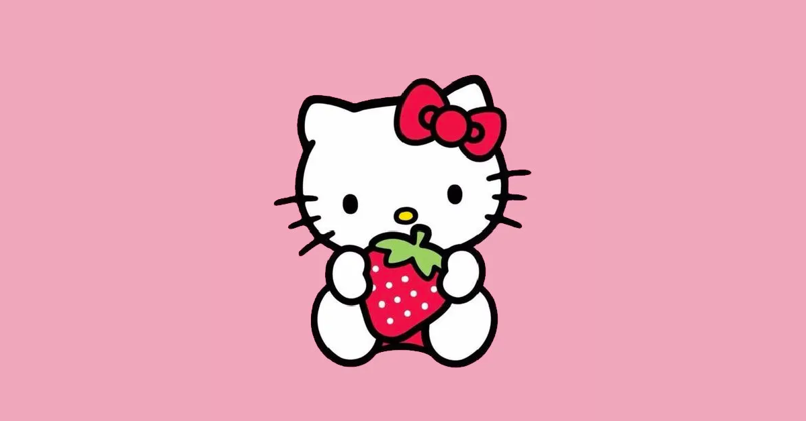

|
Hello Kitty, born on November 1st, is a Japanese Bobtail Cat, created by Yuko Shimizu. Popular among both adolescents and adults, her likeness is adorned on purses, clothes, stationery, and cars. |
|
|
| Hello Kittys childhood friend and spouse is Dear Daniel. She has a pet hamster named Sugar, which Dear Daniel gave to her. She has a younger sister named Mimmy and her best friend is My Melody. |
 |
|  |
Hello Kitty has been featured in a vast amount of video games since 1992, but most of these games were never released outside Japan. Fender has even released a Hello Kitty Squier Stratocaster in collaboration with Sanrio. Being one of the most popular Sanrio characters, Hello Kitty will continue to be a popular name and symbol for many years to come. |